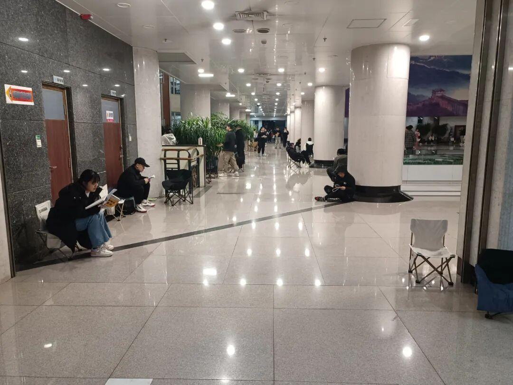
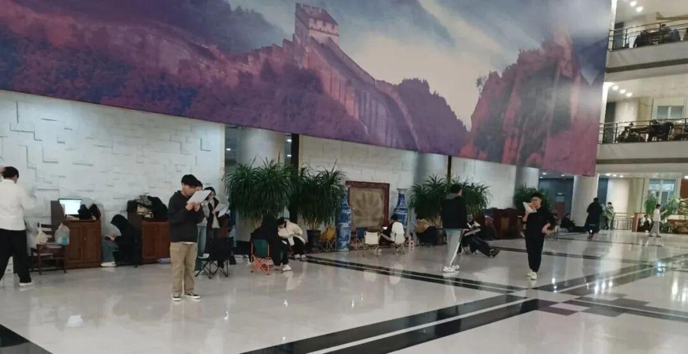
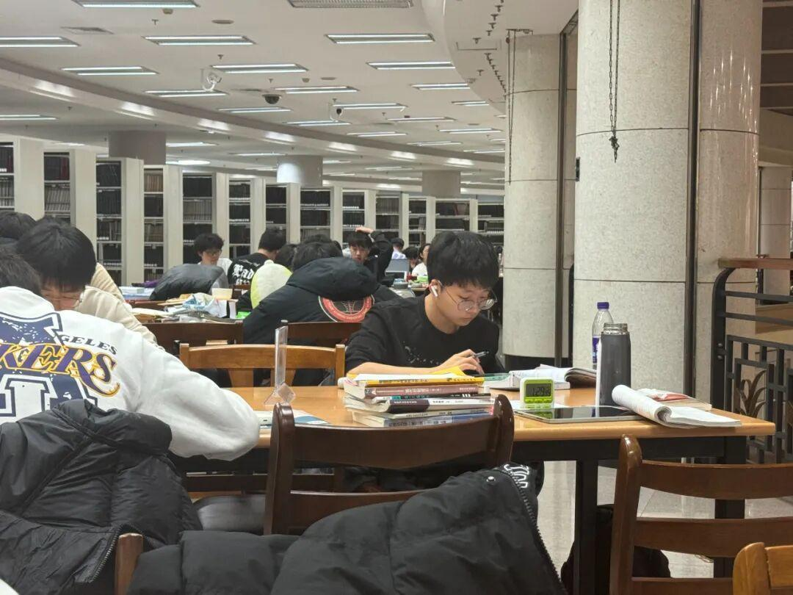
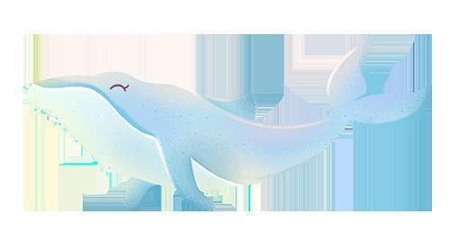
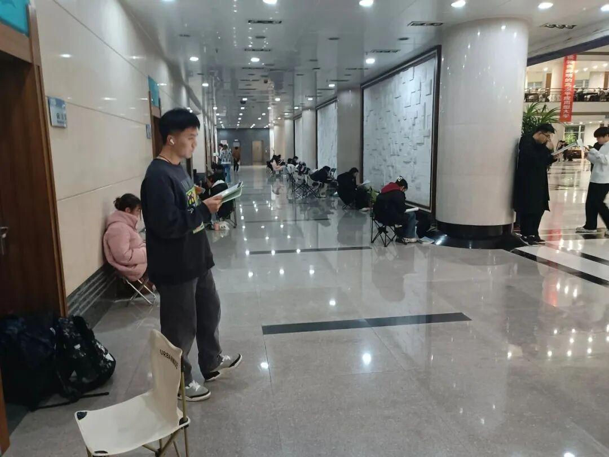
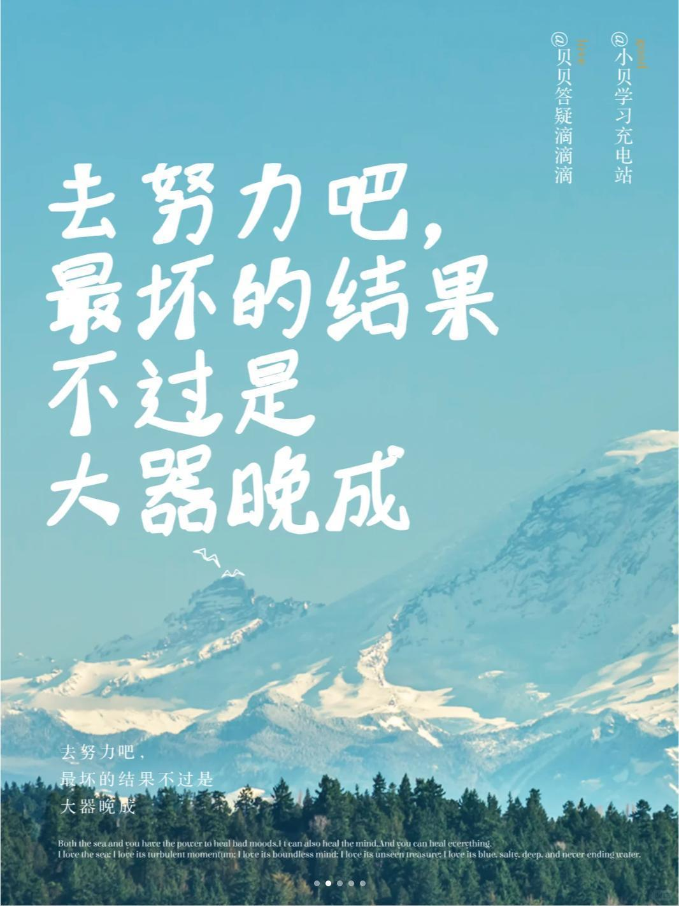
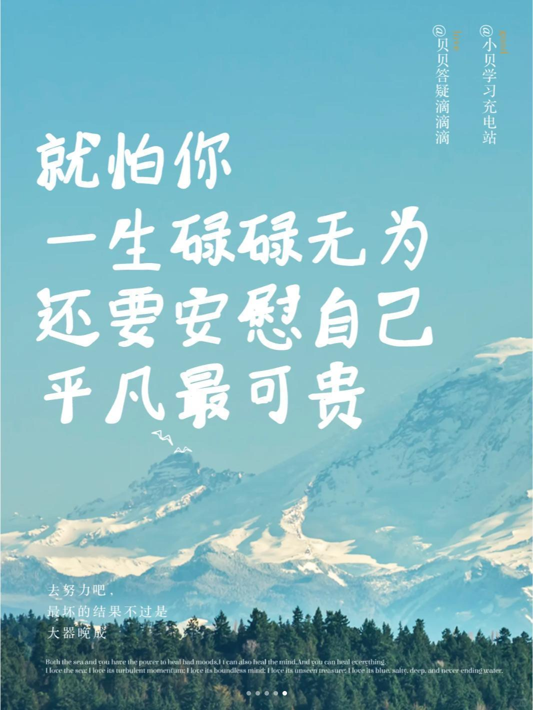

加油考研人
考研上岸


2
the beautiful life


考研注意事项
1、考试前
✨一调整一下自己的心态，如果是选择户籍所在地考试，就还需要提前去看考场；二可以适当休息，用最好的状态去应对考试。
✨考试前一个星期注意饮食问题和保暖问题，避免出现腹泻、发烧等特殊情况，研究生考试在冬天，考前穿暖和一定的衣服和鞋子。
考试注意物品：
🌟 准考证
🌟 身份证
🌟 黑色考研专用
🌟2B铅笔
🌟橡皮
🌟小刀（可能会用到，尽量备好）
🌟纸巾
🌟一瓶水（考试中尽量避免少喝水，以免想上厕所）
2、考试中
✨ 提前十五分钟进入考场，熟悉周围环境，调整心态，不要紧张
✨ 拿到试卷后先看看试卷是否完整，虽然不完整是极少数情况，但是毕竟真的存在
✨进行答题时，注意时间，按照平时的训练，做题的速度正常进行就可以，做题时从易到难，最后五分钟检查答题卡是否涂写完毕（考试铃响，停止作答！）
✨考试结束后，不要立即起身，整理考试工具。一定不要将试卷答题卡带出考场！！！这点切记！否则直接挂了！
3、考试结束
✨考完一科丢一科，不要因为上一科影响后边的考试，在职考研初试完了以后一定要着手开始准备复试！


学弟学妹的寄语
♡高考都考过了，还怕这小小考研，加油
♡考研路途虽艰难，但希望前辈们要坚定信念，心中有山海，从此以梦为马，不负韶华
♡考研路上，你并不孤单。有家人、朋友和老师的支持，有自己的努力和坚持。“宝剑锋从磨砺出，梅花香自苦寒来。”千日磨剑刃初试，一鸣惊人跃龙门。♡眼前的挑战，或许险如珠穆朗玛，但多年以后你会明白，这不过是生命中众多起落的丘陵之一
♡考研就是在艰难和痛苦中接受磨砺，要鼓起勇气面对他，加油，欧里给。
♡你所向往的，都在前方，你所坚信的，都会有收获，星光不问赶路人，时光不负有心人
♡愿在考研路上的你们奋勇前行，顺风顺水，披荆斩棘，所向披靡，最终心想事成



尾语
初升的太阳
落日的余晖
夜晚的星光点点
书桌上的一盏夜灯
都是你考研路上的见证者
这场无声的战争号角已经吹响
加油吧
你一定能够到达胜利的彼岸
END
文案|JC玉米
图片|电协信息部
审核|XX敏